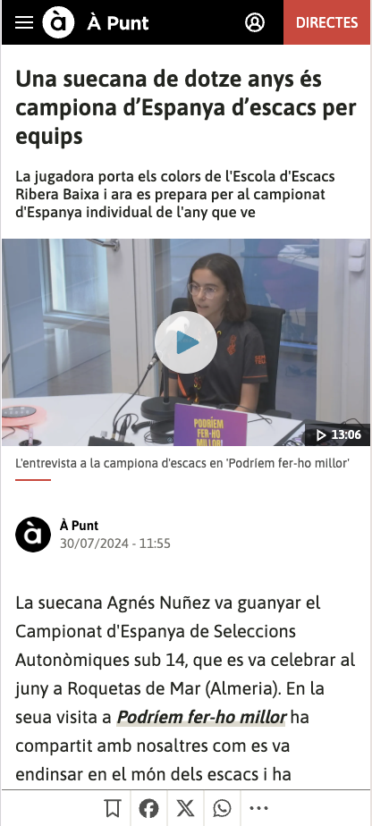
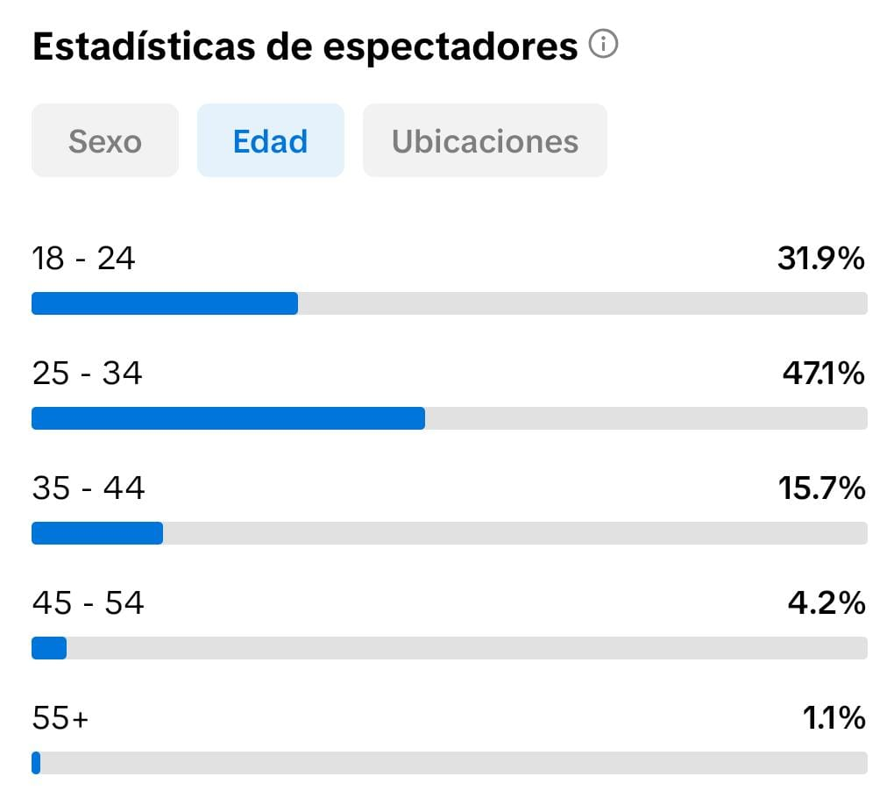

PORTFOLIO / 2026
Katherine Cárdenas
Desarrollo webs
Gestiono redes
Potencio marcas
01
Sobre mí.
Especialista en comunicación digital enfocada en el rendimiento de marcas digitales. Gestiono estrategias de contenido en redes sociales and optimizo entornos frontend, conectando la planificación de campañas con el desarrollo técnico web en un solo perfil híbrido.
SOCIAL MEDIA STRATEGY
SEO & DATA ANALYTICS
FRONTEND DEVELOPMENT
03
Estrategia de campañas.

-
✔
Investigación de palabras clave para maximizar la relevancia y el posicionamiento.
-
✔
Planificación y ejecución de campañas de pago alineadas con el negocio y el buyer persona.
-
✔
Conceptualización y desarrollo de piezas publicitarias enfocadas a conversión.
-
✔
Perfilado de audiencias mediante análisis demográfico e intereses clave.
-
✔
Refinamiento analítico de creatividades y copywriting para maximizar el CTR.